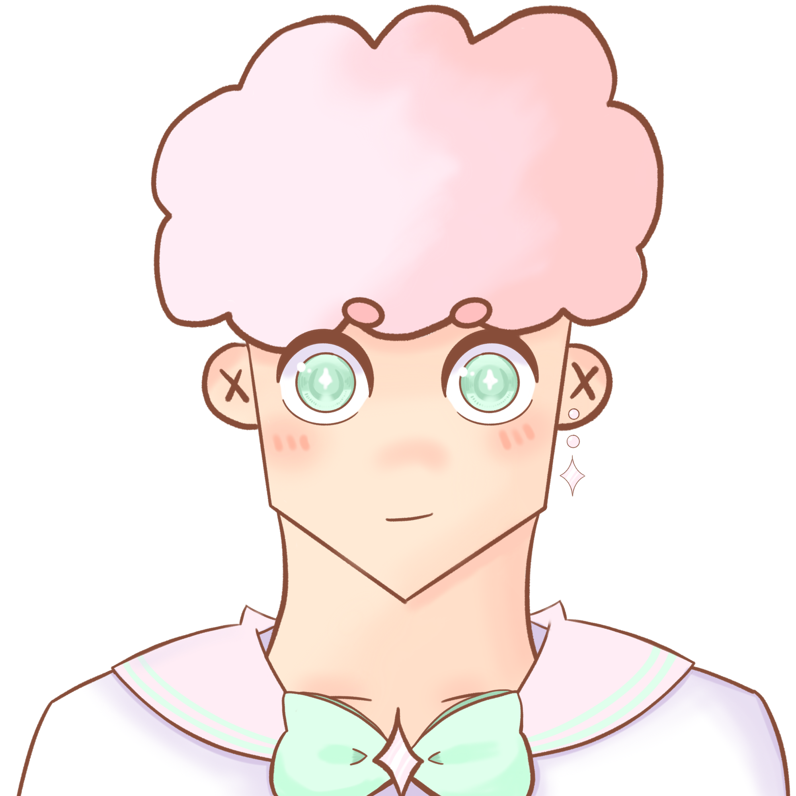

Sailor Tourmaline
Hi i'm Julian and I'm a digit major minoring in game development and creative writing at Penn State Behrend.
Welcome to my website!
How to navigate my website
- Use the navigation bar at the top left of the page to move to other pages
- Home: Will take you to the home page
- Resume: Will direct you to my resume
- Gallery: Will direct you to a page that showcases my digital projects
- Essay: Will direct you to my thoughts about WordPress and HTML
- Corpus: Will direct you to my Corpus Analysis
- Time: Will direct you to a Time Map of Video Game Consoles
- Game: Will direct you to a game review of Terracotta

This is my original character, Sailor Tourmaline! They
were drawn by me and is my vtuber model that I use to stream on twitch!

This work
is licensed under a Creative Commons
Attribution-NonCommercial-NoDerivatives 4.0 International License.